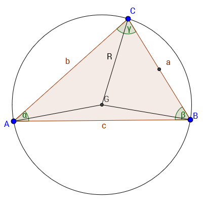

Синусва теорема:
За всеки триъгълник отношението на коя да е страна и синуса на срещулежащия ъгъл е равно на диаметъра на описаната около триъгълника окръжност:
a/sin α=b/sin β=c/sin γ=2R=d
Косинусова Теорема: а2=b2+c2-2bc*cos α b2=a2+c2-2ac*cos β c2=a2+b2-2ab*cos γ